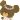

| 2011/12 14 Wed | ひめたん(*ゝω・*)ノその29 |
にょーん(ω)
ひめたん
です♪
今日はひめたんからみなさんに質問っ
ひめたん新幹線で広島から東京まで４時間かかるんぢゃけど、
そのあいだ暇人なんよねー...
だから音楽聴いて過ごしとるんじゃけど、もっといろんな曲を聴きたーい(o>ω<o)
みなさんの好きな曲を教えて下さいっ!
ひめたんの音楽プレーヤーに追加したいなー♪
 得意科目と苦手科目を教えて下さい!
得意科目と苦手科目を教えて下さい!
得意科目は
国語
・
社会
(^^)ひめたんは文系人間なんだと思う。
苦手科目は
数学
・
保体
・
理科
('`)
保体は実技ができないから...。
ひめたんが目標とするＡＫＢメンバーを教えて下さい!
好きなのは
こじはる
さん(小嶋陽菜さん)
尊敬するのは
ゆきりん
さん(柏木由紀さん)
ゆきりんさんはＡＫＢとしてはもちろん、
ユニットでも、個人でも活躍されてるところが憧れます
ドラマ出てみたり、お天気お姉さんとかしてみたり(^^)
ひめたんもゆきりんさんみたいに
マルチに活躍できる人になることが目標です!
※ごめんなさい('・・`)漢字を間違えてたので訂正させてもらいました。
ブログ書くのに何時間かかってるの？
なんだかんだで２時間はかかっちゃうかな∩^ω^∩
楽しいから、記事完成するのあっという間ですよー!
ひめたんは好きなキャラクターって何？
かわいいこなら誰でもうぇるかむ(^^)♪
本命は
ジャッキーちゃん

 ←
←
←
ジャッキーちゃんは「くまのがっこう」って絵本のキャラクターで
12匹きょうだいの末っ子のおんなのこです
今回、初ビックサイトですか？
ぴんぽーん(ω)
ビックサイトでびゅーしましたよー♪♪
ひめたん来年は漢字一文字で表すとどんな年にしたい?
「努」と書いて「ゆめ」と読むーっ!!!!!
そうそう
「努努鶏」→「ゆめゆめどり」って読むんだってー(^^)

「ゆめ」→「努」に変換されることはないんかもしれんけど
ひめたん語とゆーわけで採用!
またひとつ賢くなりましたー

教えて下さった方に感謝ですっ
中元家に
りんご
きたー(∀)ー★
毎年この時期におともだちからくるりんごが楽しみっ
さゆりんご
ちゃんーっ(。・ω・。)/

{kind=link}
{kind=link}
美味しそうしょー◎
明日りんご使って料理作ろっかな(^^)
りんごの料理といえば、みなさん何かありますかー？
ひめたん
コメント(42)
2011/12/14 21:44